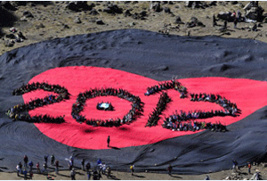

|
|

اعتراض 12 هزار نفر به خشونت علیه زنان بر قله یک کوه آتشفشان در گوآتمالا
چهار شنبه5 بهمن 1390
شهرزادنیوز: حدود 12 هزار نفر از مردم گوآتمالا، روز شنبه 21 ژانویه، با اجتماع بر دهانه آتشفشان خاموش "د آگوا"، به خشونت علیه زنان در این کشور اعتراض کردند.
آن ها روی تصویر نمادین یک قلب، به شکل "2012" به صف شدند، تا بگویند که امسال باید سال پایان دادن به خشونت علیه زنان باشد.
به گزارش خبرگزاری اتریش، اُتوُ پرز، ژنرال سابق که یک هفته پیش مراسم تحلیف ریاست جمهوری اش برگزار شد، با هلیکوپتر به تظاهرکنندگان پیوست و پرچم گوآتمالا را به آنان هدیه کرد.
در همین رابطه وبسایت "چشم انداز آمریکای لاتین" نوشته است که هر یک از شرکت کنندگان در این همایش اعتراضی بلیطی به ارزش 5 یورو خریده اند که پول گردآوری شده خرج زنان قربانی خشونت خواهد شد.
بر پایه ارزیابی ها، هرساله به طور میانگین حدود 700 زن بر اثر خشونت جان خود را از دست می دهند. طبق آمار رسمی، در این کشور 13 میلیونی هر سال حدود 65 هزار شکایت علیه خشونت خانگی به ثبت می رسد.
آتشفشان خاموش د آگوآ در 75 کیلومتری شهر گوآتمالا، پایتخت این کشور، قرار دارد و ارتفاع آن حدود 3774 متر است.